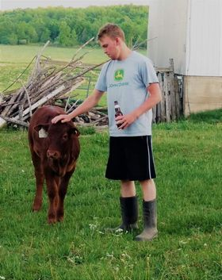
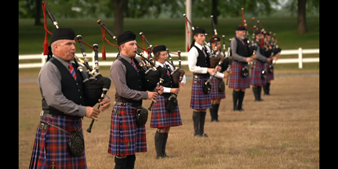

Hello World, Welcome to my first webiste that is made from scratch. It is a pleasure to meet you.
My name is Taylor Stanley Ross Young, and I am a student at the University of Ottawa in the Digital Journalism program.
I have made websites before, but they were created from templates which I then modified using HTML and CSS. While I have played around on my own time with making websites from scratch, using notepad, I have never made live any of my work.

Here are two random pictures of me.
 